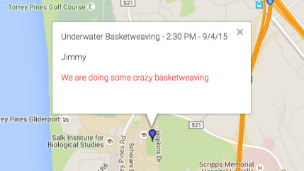

WordPlayWordPlay is my baby. It's my first native Android app! It is a word search game for Android that pits your word searching skills against a death clock. Born from a wordsearch algorithm I developed to make money from wordsearch games. I built this app so that I could have the experience of learning how to host my python wordsearch algorithm in the cloud so that other people could use it. While I was building for this use case I realized it would be really cool if I used my algorithm in a game as the service that generates a list of words for the user to find. I have never learned as much from any other project I have done. This app will be the first app that I will release onto the Google Play Store. |
See what's around you now.
|
Adding color coded map markers:
Green: Sports Blue: Academics Red: Misc (fun stuff) |
Adding infowindows for pins:
I implemented infowindows through the google API This displays event information such as the name of the event the time, date, host, and a short and sweet description. |
|
Adding Hangout Events:
I implemented linking the submit a hangout form to the actual google map. |
I also implemented location search / autocomplete to help provide seamless user experience |
|
Here is a sample hangout event that I will add to the map through the form. |

Nice! The information about my event that I filled out went straight to the location I wanted on the map. |
I create modern applications across various platforms using bleeding edge web-technologies and frameworks.
I enjoy researching and learning about new exciting technologies that will change how people develop applications in the future.
I currently am working as a Cross-Platform Software Engineer at Aventyn.
I am building a cross-platform app that will help increase patient medication adherence.
I am using Ionic + Cordova + AngularJs Frameworks with a Parse Database for backend and Cloud functionality